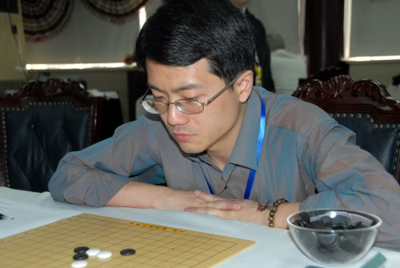
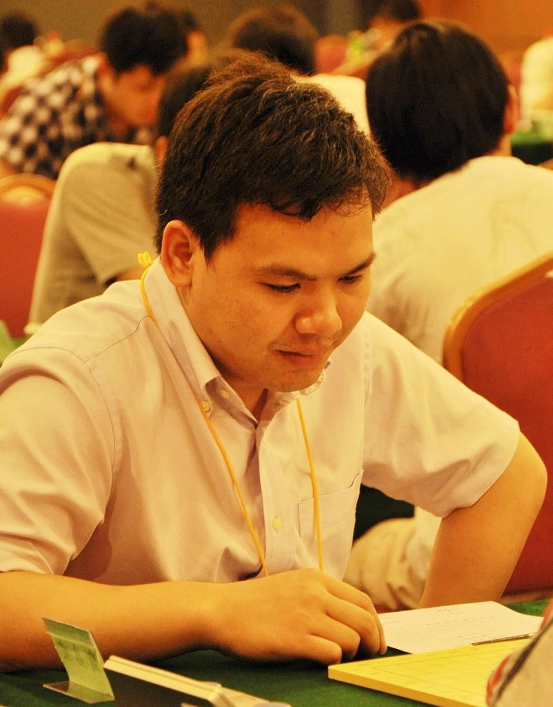

上海棋王战揭幕战谁拔头筹
#1 上海棋王战揭幕战谁拔头筹 作者：茗弈宽容 发表时间：2010-4-16 12:29:25
（上海消息 通讯员：风云）还有两天就是第三届上海五子棋棋王战决赛五番棋的揭幕战了。本届顾棋王要面对的的挑战者是实力强劲、风头正健的首届全国智力运动会五子棋男子个人冠军得主贺启发六段，究竟是棋王继续卫冕，还是挑战者登上棋王宝座，令人浮想联翩。赛前，本站记者特地联系了上海五子棋界元老顾伟国五段，请他谈谈对这场比赛的看法。顾伟国表示，从综合实力上讲，两名选手在伯仲之间，但是贺启发对各类变化了解掌握较多，顾炜近年注重协会事务而疏于棋艺，两相比较，贺启发更占有优势。借着，顾伟国话锋一转，认为，番棋赛不同于一般的比赛，不是以一盘对局的输赢而定胜负的，相信顾炜也一定会尽全力应战，最终结果殊难预料。顾伟国希望并期待看到两名棋手联袂为大家弈出精彩而有意义的对局。

VS

转自中华连珠
#2 Re:上海棋王战揭幕战谁拔头筹 作者：茗弈宽容 发表时间：2010-4-17 13:22:11